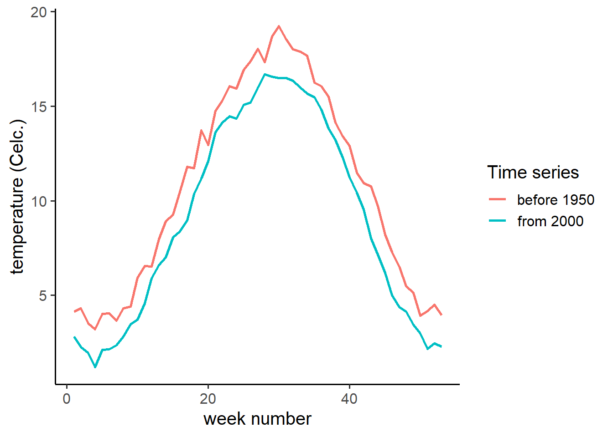

3 T-tests
There are three types of t-tests:
- One sample t-test
- Paired t-test
- Independent t-test
All three tests can be applied with one function t.test(), thanks to the possibility of multiple arguments in one function.
In the next section we need the data set bodytemp, which you already imported.
3.1 One-sample t-test
The simplest version of a t-test is when you want to test if the average of a single population is different from a theoretical value. So, you collect a random sample from a population, e.g. the body temperature of 130 students.
The next step is to define your hypotheses:
H0: Temperature is not different from 37 degrees Celsius. H1: Temperature is different from 37 degrees Celsius.
The general idea is that human’s body temperature is on average 37 degrees Celsius, hence this H0. The symbol for the population average is \(\mu\), pronounced as mu.
Third step is testing the hypothesis with the function t.test(x, mu = ..).
For a one-sample t-test (as we need now), the first argument should be a vector, containing the sample to be tested. The other argument needed is mu, which is \(\mu\) from the H0. NB: mu is not second in row in the list of possible arguments, therefore you need to name it in your code followed by = and the value.
The output gives a lot of information. Most important, for hypothesis testing, is the p-value. P-values less than the threshold \(\alpha\) (often 0.05) means that you reject the H0 and accept the H1. But also usefull is the 95% confidence interval. It shows the lower and upper limit where, with 95% confidence, of the real average.
Exercise 3.1 Vectors and data frames
- refresh your memory about vectors and data frames. How can you call a vector from a data frame?
Exercise 3.2 One sample t-test
- Test with a one-sample t-test if the average body temperature deviates from 37 degrees celsius (add the code to your script.
- Write down your conclusions as a comment in the script.
3.1.1 One sided and two sided tests
With a t-test you can test one and two sided. The default setting in the function t.test() is two sided. But there are situations you want to test if the average value is lower than a certain value. Your H1 is then: \(\mu\) < 37. By giving the argument alternative the value less, you test one sided. In the situation you want to test \(\mu\) > 37, you need to use the value greater.
Exercise 3.3 Testing one sided
- copy your t.test code to a new row and adjust it so it will test if \(\mu\) < 37.
- Compare the outcome
3.1.2 Climate change
In the last years the role of humans in climate change is becoming more clear. That is ilustrated in below figure, showing the week average in the Bilt in the period before 1950 and from 2000 (data: KNMI).

Now it is your turn to test, for a specific week if the temperatures, from 2000 onward, are on average higher than before 1950. You all have a data set in your project map for a specific week number. Check the average pre 1950 temperature for the same week number in the table below.
Exercise 3.4 Climate change
- Open a new script, save it under a logical name
- Write down the H0 and the H1 as comments in the script
- write down codes for importing the data set and the one sample t-test.
- Write down your conclusions as comment in the script.
Average temperature per week in period 1901-1950:
| weeknumber | pre1950 |
|---|---|
| 1 | 2.83 |
| 2 | 2.27 |
| 3 | 1.95 |
| 4 | 1.20 |
| 5 | 2.13 |
| 6 | 2.16 |
| 7 | 2.36 |
| 8 | 2.82 |
| 9 | 3.47 |
| 10 | 3.71 |
| 11 | 4.57 |
| 12 | 5.90 |
| 13 | 6.59 |
| 14 | 7.02 |
| 15 | 8.06 |
| 16 | 8.37 |
| 17 | 8.95 |
| 18 | 10.35 |
| 19 | 11.18 |
| 20 | 12.10 |
| 21 | 13.63 |
| 22 | 14.14 |
| 23 | 14.48 |
| 24 | 14.36 |
| 25 | 15.07 |
| 26 | 15.19 |
| 27 | 15.99 |
| 28 | 16.69 |
| 29 | 16.58 |
| 30 | 16.48 |
| 31 | 16.48 |
| 32 | 16.35 |
| 33 | 15.98 |
| 34 | 15.68 |
| 35 | 15.48 |
| 36 | 14.83 |
| 37 | 13.82 |
| 38 | 13.23 |
| 39 | 12.28 |
| 40 | 11.24 |
| 41 | 10.44 |
| 42 | 9.55 |
| 43 | 8.02 |
| 44 | 7.16 |
| 45 | 6.19 |
| 46 | 5.00 |
| 47 | 4.39 |
| 48 | 4.15 |
| 49 | 3.44 |
| 50 | 2.98 |
| 51 | 2.18 |
| 52 | 2.46 |
| 53 | 2.29 |
3.2 Independent t-test
Up to now we have tested one group against a theoretic average. But often you want to compare two groups. In that case you have an independent (or explanatory) variable, which states to what group the observation belongs.
In the function t.test() you can use as first argument a statistical formula instead of a single vector. Such a formula always has the form dependent ~ independent.
The dependent (or response) variable is the variable you are interested in and which variation you want to explain.
In the data set bodytemp we have the column gen giving the gender of the students.
Exercise 3.5 Independent t-test
- Test if the average body temperature of male and female students significant differ. Add the code to the bodytemp script
- Write down the conclusions as comments in your script
3.2.1 Fertilization
In your data map you find a Excel file called bemesting.xlsx. It contains data of an experiments where plant length is measured on plants that were or were not fertilized.
Exercise 3.6 Fertilization
- Make a new script, give it a logical name
- Write code that import the bemesting.xlsx file
- Test if fertilization has an effect on plant length. NB: consider if it makes sense to test one-sided
- Write down the conclusions as a comment in the script
3.3 Paired t-test
With the independent t-test, you have two groups that are sampled independently from each other, where both groups have a different treatment. But there are situations that you apply two treatments on the same research objects.
For example, students do a math test before and after drinking a few glasses of beer. Of course you expect that the math capacity will decrease after drinking beer. The hypotheses are:
H0: Score before drinking is equal to score after drinking beer.
H1: Score before drinking is higher then score after drinking beer.
Under the H0 you expect that the scores are on average equal before and after drinking. With other words: the difference between before and after is on average 0.
How can you test that with a t-test?
- Calculate for each student the difference of both tests
- Apply a one-sample t-test for the difference with \(\mu\)=0
But you can apply both steps at once with a paired t-test, so you don’t need to first calculate the difference.
With paired data it is important that it is clear which observations are paired. A good habit is to store paired data on the same row in your Excel spreadsheet:
| student | before | after |
|---|---|---|
| 1 | 7 | 5 |
| 2 | 4 | 4 |
| 3 | 6 | 5 |
| 4 | 9 | 7 |
| 5 | 5 | 5 |
This setup is called a wide table. The consequence is that the response variable is not in one column, and therefor you cannot use the standard notation of a statistical formula.
Luckily the function t.test() also can handle the input of two vectors: t.test(x,y). To make clear to R that we want to apply a paired t-test, we need to set the argument paired to TRUE: t.test(x,y, paired = TRUE). NB: TRUE needs to be written in capital letters. For lacy people: you also just use the capital letter T.
Exercise 3.7 beer
- make a new script, and write a code to import bier.xlsx (from your data map)
- import the data, and test if there is an negative effect of beer on the math score (write down your code in the script).
- Write down your conclusions as a comment in the script.
3.3.1 Macho blackbirds
Research has indicated that higher testosterone levels have a negative effect on resistance against diseases. This hypothesis is tested in red-winged blackbirds. In thirteen male birds antibody levels were measured before and after placing a testosterone producing implant. You find the data in blackbirds.xlsx in your data map.
Exercise 3.8 Macho blackbirds
- Test if the implant has a positive effect on antibody production
- Write down your conclusions in the script